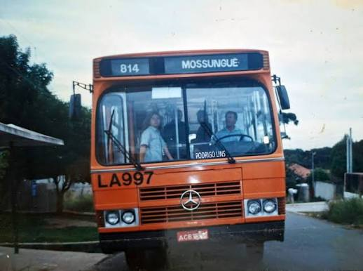
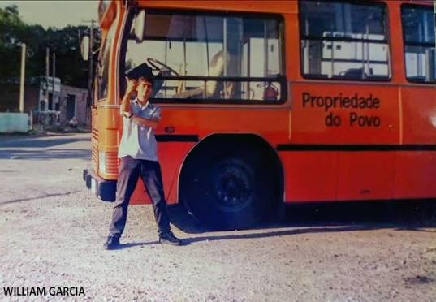
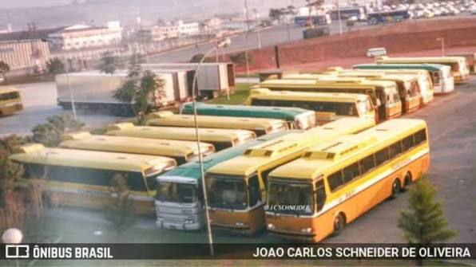

O começo da nossa história - 1960
Em 1958, o município de Irati, no centro-sul do Paraná, ainda dependia de estradas de terra e de carroças para locomoção. Joaquim Aroeira Ferreira via todos os dias o mesmo cenário: trabalhadores rurais caminhando horas até a cidade para vender produtos, consultar um médico ou resolver documentos. Seu Joaquim teve uma ideia simples: vendeu uma parcela de terra herdada do pai, juntou as economias da esposa, que costurava para fora, e comprou um velho ônibus Mercedes-Benz com carroceria de madeira, apelidado pelos moradores de “Aroeirinha”. A primeira linha ligava a comunidade de Gonçalves Júnior ao centro de Irati, com a primeira viagem do dia partindo às 5h30. Em 1961, nascia oficialmente a Transporte Coletivo Aroeira Ltda., com três ônibus e sete funcionários.
Crescimento e Conquistas - 1970
A década de 1970 trouxe a expansão da malha rodoviária e o êxodo rural em direção às cidades médias. A Aroeira acompanhou o movimento. Em 1972, conquistou a concessão da linha Irati–Ponta Grossa, e em 1976 inaugurou a ligação com Curitiba, que se tornaria sua principal rota. Nessa época, o filho mais velho, Antônio Aroeira, formado em administração, assumiu a gestão. Foi dele a decisão de investir em manutenção própria: em 1979, a empresa abriu sua primeira oficina em Irati, o que reduziu quebras e criou a fama de pontualidade que a distinguia dos concorrentes.
Marcos desse período:
- 1974: Primeiros ônibus com bancos estofados e cortinas, algo raro nas linhas do interior.
- 1985: Frota de 38 veículos e 150 funcionários.
- 1988: Inauguração da garagem central em Ponta Grossa, ponto estratégico entre o interior e a capital.



A Expansão - 1990
Nos anos 1990, a economia do Sul se integrava mais, e o fluxo entre Paraná e Santa Catarina crescia com o comércio e Antônio percebeu que a próxima fronteira da Aroeira estava ao sul. Em 1992, após meses de negociação com o órgão regulador, a empresa obteve autorização para a linha Curitiba–Joinville, passando por São José dos Pinhais e Garuva. A primeira viagem interestadual, em uma manhã de março, teve o ônibus lotado e uma pequena cerimônia na rodoviária de Joinville, com banda local e distribuição de pão de mel aos passageiros.
A expansão seguiu em ritmo firme:
- 1995: Extensão até Blumenau, atendendo trabalhadores e estudantes da região.
- 1998: Linha Curitiba–Florianópolis, com serviço executivo e ar-condicionado, voltada ao turismo de verão.
- 2001: Abertura de uma filial em Joinville, com garagem e oficina próprias.
Em 2003, a terceira geração entrou em cena: Helena Aroeira, neta de Joaquim, engenheira de produção, liderou a modernização da frota e a implantação de sistemas de rastreamento por satélite, melhorando a segurança e a previsibilidade das viagens.
A Aroeira Hoje
Atualmente, a Transporte Coletivo Aroeira opera mais de 200 veículos, emprega cerca de 900 pessoas e atende mais de 40 municípios entre o centro-sul paranaense e o Vale do Itajaí e o litoral catarinense. Entre suas iniciativas mais conhecidas estão:
- Programa Estrada Viva: manutenção preventiva e renovação constante da frota, com ônibus mais novos substituindo os antigos a cada ciclo.
- Passe Estudante Aroeira: descontos para universitários que se deslocam entre cidades.
- Memorial Aroeirinha: o ônibus original de 1958, restaurado, fica exposto na garagem de Irati e recebe visitas escolares.
Audio Histórico
Temos aqui um áudio histórico do primeiro ônibus recebido na primeira garagem da Transporte Coletivo Aroeira: